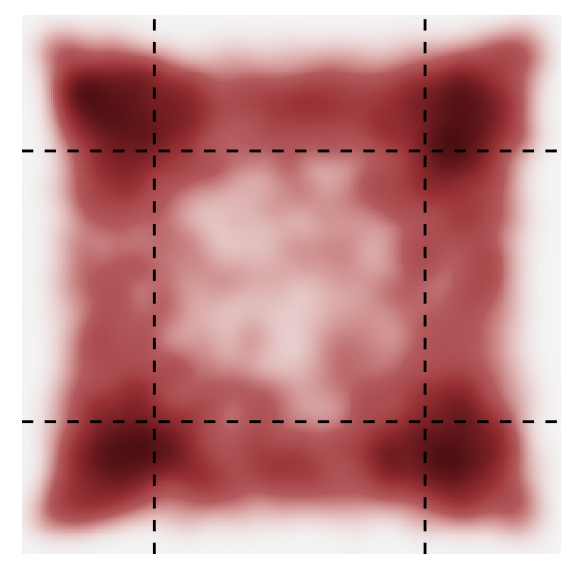
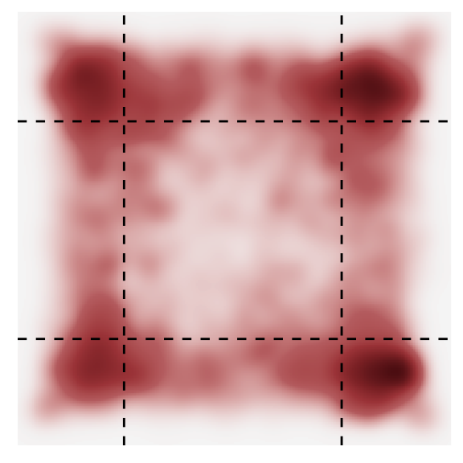
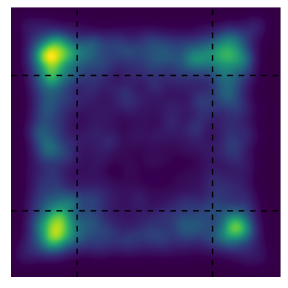
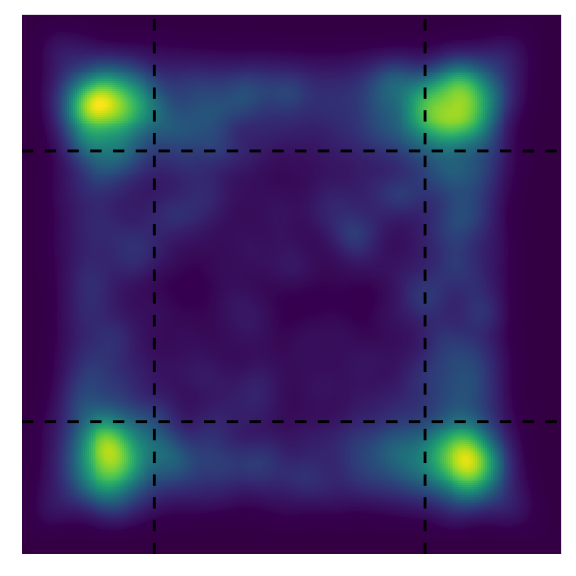
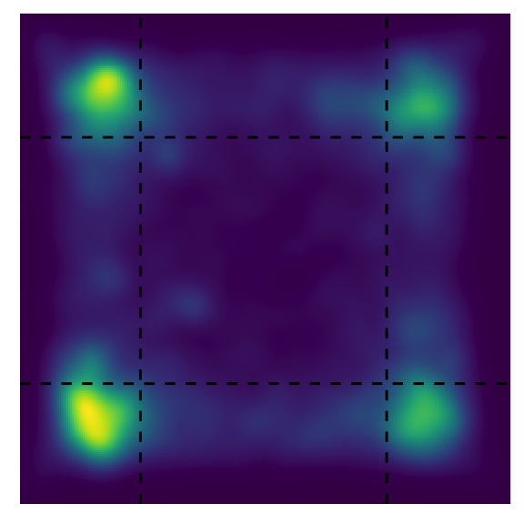
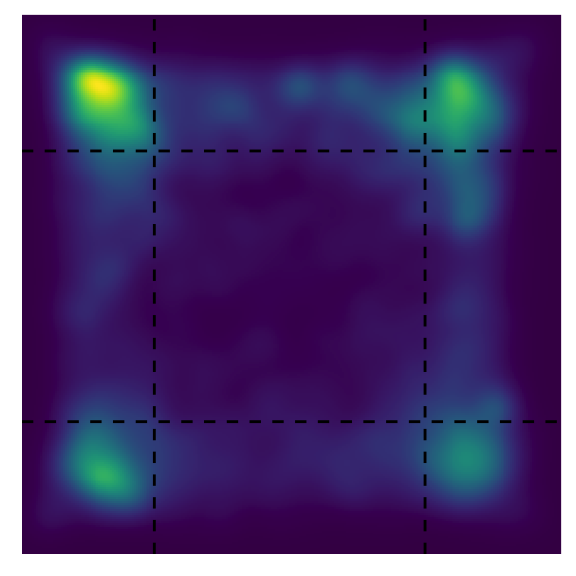
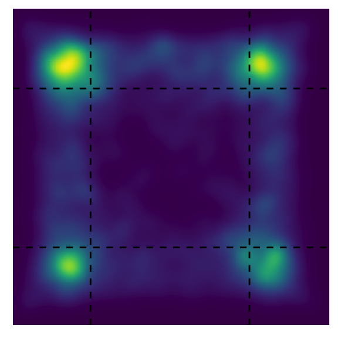
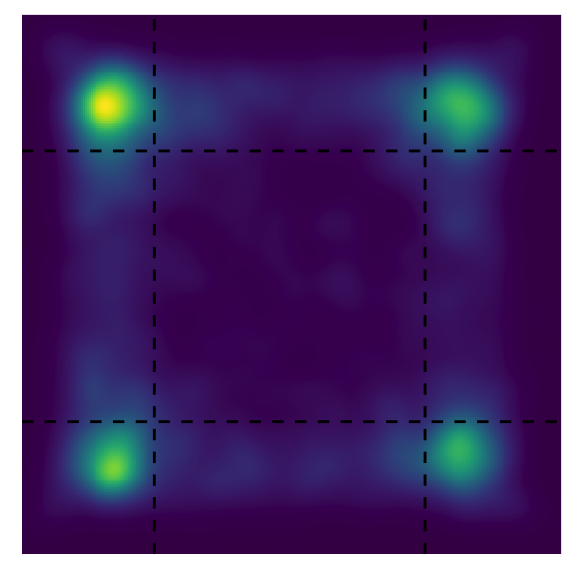
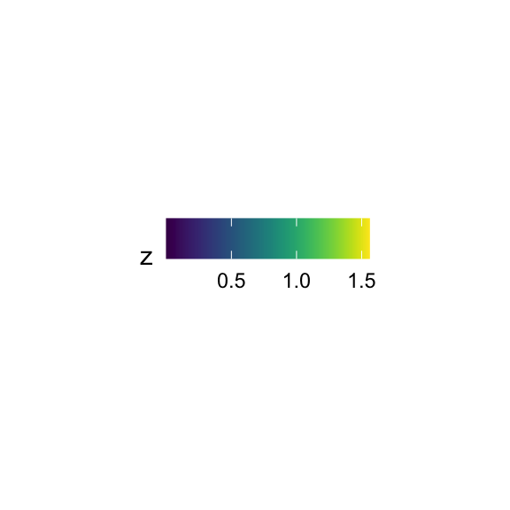
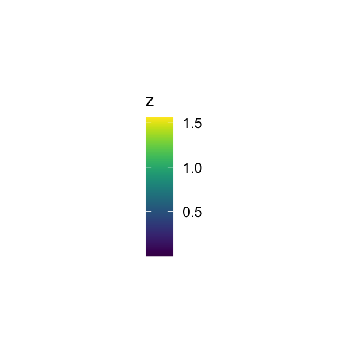

Last updated: 2024-01-21
Checks: 6 1
Knit directory:
CorticalAmygdala_pipelines/
This reproducible R Markdown analysis was created with workflowr (version 1.7.1). The Checks tab describes the reproducibility checks that were applied when the results were created. The Past versions tab lists the development history.
The R Markdown file has staged changes. To know which version of the
R Markdown file created these results, you’ll want to first commit it to
the Git repo. If you’re still working on the analysis, you can ignore
this warning. When you’re finished, you can run
wflow_publish to commit the R Markdown file and build the
HTML.
Great job! The global environment was empty. Objects defined in the global environment can affect the analysis in your R Markdown file in unknown ways. For reproduciblity it’s best to always run the code in an empty environment.
The command set.seed(20220906) was run prior to running
the code in the R Markdown file. Setting a seed ensures that any results
that rely on randomness, e.g. subsampling or permutations, are
reproducible.
Great job! Recording the operating system, R version, and package versions is critical for reproducibility.
Nice! There were no cached chunks for this analysis, so you can be confident that you successfully produced the results during this run.
Great job! Using relative paths to the files within your workflowr project makes it easier to run your code on other machines.
Great! You are using Git for version control. Tracking code development and connecting the code version to the results is critical for reproducibility.
The results in this page were generated with repository version fba58a9. See the Past versions tab to see a history of the changes made to the R Markdown and HTML files.
Note that you need to be careful to ensure that all relevant files for
the analysis have been committed to Git prior to generating the results
(you can use wflow_publish or
wflow_git_commit). workflowr only checks the R Markdown
file, but you know if there are other scripts or data files that it
depends on. Below is the status of the Git repository when the results
were generated:
Ignored files:
Ignored: .DS_Store
Ignored: .RData
Ignored: .Rhistory
Ignored: .Rproj.user/
Ignored: analysis/.DS_Store
Ignored: data/behavior/
Ignored: data/projections/
Ignored: data/rnascope/
Ignored: data/sequencing/
Ignored: output/.DS_Store
Ignored: renv/library/
Ignored: renv/staging/
Untracked files:
Untracked: analysis/08A-merge_rd1_ATAC.Rmd
Untracked: analysis/behavior_03-projections.Rmd
Untracked: analysis/behavior_04-projections_silencing_tmt.Rmd
Untracked: analysis/behavior_05-projections_silencing_2PE.Rmd
Untracked: analysis/behavior_09-epm_topography.Rmd
Untracked: analysis/behavior_10-epm_projections.Rmd
Untracked: analysis/behavior_12-openfield_projections.Rmd
Untracked: analysis/behavior_13-openfield_genes_silence.Rmd
Untracked: analysis/behavior_14-openfield_projections_silence.Rmd
Untracked: analysis/behavior_16-epm_projections_silence.Rmd
Untracked: analysis/projections.Rmd
Untracked: analysis/sequencing-02B-initial_classification_rd1_RNA.Rmd
Untracked: analysis/sequencing-02C-reprocess_Neuron_rd1_RNA.Rmd
Untracked: analysis/sequencing-02D-Neuron_classification_rd1_RNA.Rmd
Untracked: analysis/sequencing-02E-reprocess_Glut_rd1_RNA.Rmd
Untracked: analysis/sequencing-02F-reprocess_GABA_rd1_RNA.Rmd
Untracked: analysis/sequencing-02G-Glut_classification_rd1_RNA.Rmd
Untracked: analysis/sequencing-03A-merge_filtered_RNA.Rmd
Untracked: analysis/sequencing-03B-initial_classification_RNA.Rmd
Untracked: analysis/sequencing-04-initial_deg.Rmd
Untracked: analysis/sequencing-04A-reprocess_Neuron_RNA.Rmd
Untracked: analysis/sequencing-04B-reprocess_Nonneuron_RNA.Rmd
Untracked: analysis/sequencing-04C-Neuron_classification_RNA.Rmd
Untracked: analysis/sequencing-04D-Nonneuron_classification_RNA.Rmd
Untracked: analysis/sequencing-05C-reprocess_Astro_RNA.Rmd
Untracked: analysis/sequencing-05L-Glut_classification_RNA.Rmd
Untracked: analysis/sequencing-05M-GABA_classification_RNA.Rmd
Untracked: analysis/sequencing-05N-Astro_classification_RNA.Rmd
Untracked: analysis/sequencing-05O-Macro_classification_RNA.Rmd
Untracked: analysis/sequencing-05P-NFOL_classification_RNA.Rmd
Untracked: analysis/sequencing-05Q-MOL_classification_RNA.Rmd
Untracked: analysis/sequencing-05R-ABC_classification_RNA.Rmd
Untracked: analysis/sequencing-05S-VLMC_classification_RNA.Rmd
Untracked: analysis/sequencing-05T-Immune_classification+labeling_RNA.Rmd
Untracked: analysis/sequencing-05X-reprocess_Astro.Rmd
Untracked: analysis/sequencing-05X-reprocess_GABAergic.Rmd
Untracked: analysis/sequencing-05X-reprocess_Glutamatergic.Rmd
Untracked: analysis/sequencing-05X-reprocess_Microglia.Rmd
Untracked: analysis/sequencing-05X-reprocess_Neuron.Rmd
Untracked: analysis/sequencing-05X-reprocess_Nonneuron.Rmd
Untracked: analysis/sequencing-05X-reprocess_OLG.Rmd
Untracked: analysis/sequencing-05X-reprocess_OPC.Rmd
Untracked: analysis/sequencing-05X-reprocess_VLMC.Rmd
Untracked: analysis/sequencing-06A-merged_classification_RNA.Rmd
Untracked: analysis/sequencing-06B-annotate_GABAergic.Rmd
Untracked: analysis/sequencing-06B-merged_deg_discovery_RNA.Rmd
Untracked: analysis/sequencing-07A-preprocess_aplCoA-1_P1_ATAC.Rmd
Untracked: analysis/sequencing-07B-preprocess_aplCoA-1_P2_ATAC.Rmd
Untracked: analysis/sequencing-07C-preprocess_aplCoA-2_ATAC.Rmd
Untracked: analysis/sequencing-07D-preprocess_pplCoA-1_P1_ATAC.Rmd
Untracked: analysis/sequencing-07E-preprocess_pplCoA-1_P2_ATAC.Rmd
Untracked: analysis/sequencing-07F-preprocess_pplCoA-2_ATAC.Rmd
Untracked: analysis/spatial-01A-preprocess_039-A_S18.Rmd
Untracked: analysis/spatial-01B-preprocess_039-B_S19.Rmd
Untracked: analysis/spatial-01C-preprocess_042-A_S22.Rmd
Untracked: analysis/spatial-01D-preprocess_061-D_S1.Rmd
Untracked: analysis/spatial-01E-preprocess_062-B_S2.Rmd
Untracked: analysis/spatial-01F-preprocess_063-A_S4.Rmd
Untracked: analysis/spatial-01G-preprocess_063-B_S5.Rmd
Untracked: analysis/spatial-01H-preprocess_063-D_S7.Rmd
Untracked: analysis/spatial-01I-preprocess_105-A_S8.Rmd
Untracked: analysis/spatial-01J-preprocess_105-B_S9.Rmd
Untracked: analysis/spatial-01K-preprocess_106-B_S11.Rmd
Untracked: analysis/spatial-01L-preprocess_106-C_S12.Rmd
Untracked: analysis/spatial-01M-preprocess_107-A_S15.Rmd
Untracked: analysis/spatial-01N-preprocess_107-B_S16.Rmd
Untracked: analysis/spatial-01O-preprocess_108-A_S13.Rmd
Untracked: analysis/spatial-01P-preprocess_122-A_S23.Rmd
Untracked: analysis/spatial-01Q-preprocess_122-B_S24.Rmd
Untracked: analysis/spatial-01R-preprocess_122-C_S25.Rmd
Untracked: analysis/spatial-01S-preprocess_123-A_S30.Rmd
Untracked: analysis/spatial-01T-preprocess_063-C_S6.Rmd
Untracked: analysis/spatial-01U-preprocess_108-C_S14.Rmd
Untracked: analysis/spatial-02-merge.Rmd
Untracked: analysis/spatial-03-classify.Rmd
Untracked: output/sequencing/
Untracked: output/spatial/
Unstaged changes:
Modified: analysis/sequencing-02A-merge_rd1_RNA.Rmd
Modified: analysis/sequencing-03-initial_classification.Rmd
Modified: analysis/sequencing-05A-reprocess_Glut_RNA.Rmd
Staged changes:
New: analysis/behavior_06-genes_silencing_tmt.Rmd
New: analysis/behavior_07-epm_genes_silence.Rmd
New: analysis/behavior_08-openfield_genes_silence.Rmd
Note that any generated files, e.g. HTML, png, CSS, etc., are not included in this status report because it is ok for generated content to have uncommitted changes.
There are no past versions. Publish this analysis with
wflow_publish() to start tracking its development.
This is a notebook that processes 4-quad data and outputs analyses and figures for publication.
# set up paths
gene_id <- params$dataset
gene_path <- params$path
start_min <- params$start_min
end_min <- params$end_min
source("code/behavior-refs.R")Loading required package: MASSLoading required package: tidyverse── Attaching core tidyverse packages ──────────────────────── tidyverse 2.0.0 ──
✔ dplyr 1.1.3 ✔ readr 2.1.4
✔ forcats 1.0.0 ✔ stringr 1.5.0
✔ ggplot2 3.4.3 ✔ tibble 3.2.1
✔ lubridate 1.9.3 ✔ tidyr 1.3.0
✔ purrr 1.0.2
── Conflicts ────────────────────────────────────────── tidyverse_conflicts() ──
✖ dplyr::filter() masks stats::filter()
✖ dplyr::lag() masks stats::lag()
✖ dplyr::select() masks MASS::select()
ℹ Use the conflicted package (<http://conflicted.r-lib.org/>) to force all conflicts to become errors
Loading required package: colorRamps
Loading required package: RColorBrewer
Loading required package: spatstat
Loading required package: spatstat.data
Loading required package: spatstat.geom
spatstat.geom 3.2-5
Attaching package: 'spatstat.geom'
The following object is masked from 'package:MASS':
area
Loading required package: spatstat.random
spatstat.random 3.1-6
Loading required package: spatstat.explore
Loading required package: nlme
Attaching package: 'nlme'
The following object is masked from 'package:dplyr':
collapse
spatstat.explore 3.2-3
Loading required package: spatstat.model
Loading required package: rpart
spatstat.model 3.2-6
Loading required package: spatstat.linnet
spatstat.linnet 3.1-1
spatstat 3.0-6
For an introduction to spatstat, type 'beginner'
Loading required package: viridis
Loading required package: viridisLite
Loading required package: cowplot
Attaching package: 'cowplot'
The following object is masked from 'package:lubridate':
stamp
Loading required package: grid
Attaching package: 'grid'
The following object is masked from 'package:spatstat.geom':
as.mask
Loading required package: gridExtra
Attaching package: 'gridExtra'
The following object is masked from 'package:dplyr':
combine
Loading required package: colorspace
Attaching package: 'colorspace'
The following object is masked from 'package:spatstat.geom':
coords
Loading required package: scales
Attaching package: 'scales'
The following object is masked from 'package:viridis':
viridis_pal
The following object is masked from 'package:spatstat.geom':
rescale
The following object is masked from 'package:purrr':
discard
The following object is masked from 'package:readr':
col_factor
Attaching package: 'zoo'
The following objects are masked from 'package:base':
as.Date, as.Date.numeric
Loading required package: carData
Attaching package: 'car'
The following object is masked from 'package:spatstat.model':
bc
The following object is masked from 'package:spatstat.geom':
ellipse
The following object is masked from 'package:dplyr':
recode
The following object is masked from 'package:purrr':
some
Loading required package: mvtnorm
Loading required package: survival
Loading required package: TH.data
Attaching package: 'TH.data'
The following object is masked from 'package:MASS':
geyser
Attaching package: 'rstatix'
The following object is masked from 'package:MASS':
select
The following object is masked from 'package:stats':
filter
Attaching package: 'ggpubr'
The following object is masked from 'package:cowplot':
get_legend
The following objects are masked from 'package:spatstat.geom':
border, rotatesource("code/behavior-misc_processes.R")
source("code/behavior-plot_functions.R")
gene_groups <- unlist(strsplit(Sys.glob(paste0(gene_path, "SAL/*")),
paste0(gene_path, "SAL/")))[c(FALSE, TRUE)]Names have to be given manually in most cases. Also for now copy into console because it does not load due to odd workspace issues. This loads all files in a directory and puts it into the correct format automatically.
# set up the object with pointers
data_gene_sal <- vector(mode = "list", length = 4)
data_gene_sal <- lapply(gene_groups,
function(x) lapply(Sys.glob(paste0(gene_path, "SAL/", x, "/*")),
function(y) process_series_openfield(y, "silence")))
data_gene_cno <- vector(mode = "list", length = 4)
data_gene_cno <- lapply(gene_groups,
function(x) lapply(Sys.glob(paste0(gene_path, "CNO/", x, "/*")),
function(y) process_series_openfield(y, "silence")))
# add names to each
names(data_gene_sal) <- Sys.glob(paste0(gene_path, "SAL/", "*"))
names(data_gene_sal) <- unlist(strsplit(names(data_gene_sal),
paste0(gene_path, "SAL/")))[c(FALSE, TRUE)]
names(data_gene_cno) <- Sys.glob(paste0(gene_path, "CNO/", "*"))
names(data_gene_cno) <- unlist(strsplit(names(data_gene_cno),
paste0(gene_path, "CNO/")))[c(FALSE, TRUE)]
for (i in 1:length(gene_groups)){
data_gene_sal <- add_custom_names(data_gene_sal, paste0(gene_path, "SAL/"),
gene_groups[i], gene_labels[i])
data_gene_cno <- add_custom_names(data_gene_cno, paste0(gene_path, "CNO/"),
gene_groups[i], gene_labels[i])
}
data_gene_sal <- list(data_gene_sal$`VGlut1-control`, data_gene_sal$`VGlut1-Gi`,
data_gene_sal$`VGlut2-control`, data_gene_sal$`VGlut2-Gi`)
names(data_gene_sal) <- c("VGlut1-control", "VGlut1-Gi", "VGlut2-control", "VGlut2-Gi")
data_gene_cno <- list(data_gene_cno$`VGlut1-control`, data_gene_cno$`VGlut1-Gi`,
data_gene_cno$`VGlut2-control`, data_gene_cno$`VGlut2-Gi`)
names(data_gene_cno) <- c("VGlut1-control", "VGlut1-Gi", "VGlut2-control", "VGlut2-Gi")gene_sal_array <- transform_openfield_centertime(data_gene_sal,
"full", "Region", 1, 2400)
gene_cno_array <- transform_openfield_centertime(data_gene_cno,
"full", "Region", 1, 2400)
centertime_group_gene <- group_array(data_gene_sal, gene_sal_array, gene_cno_array, "CenterTime")VGlut1_group_gene <- centertime_group_gene[centertime_group_gene$group
%in% c("VGlut1 Gi", "VGlut1 mCh"),] %>%
gather(key = "time", value = "CenterTime", baseline_CenterTime, treatment_CenterTime) %>%
convert_as_factor(group, time)
levels(VGlut1_group_gene$time) <- c("SAL", "CNO")
VGlut1_group_gene$group <- factor(VGlut1_group_gene$group,
levels = c("VGlut1 mCh", "VGlut1 Gi"))
levels(VGlut1_group_gene$group) <- c("mCh", "Gi")
VGlut1_group_gene %>%
group_by(group, time) %>%
get_summary_stats(CenterTime, type = "mean_se")VGlut2_group_gene <- centertime_group_gene[centertime_group_gene$group
%in% c("VGlut2 Gi", "VGlut2 mCh"),] %>%
gather(key = "time", value = "CenterTime", baseline_CenterTime, treatment_CenterTime) %>%
convert_as_factor(group, time)
levels(VGlut2_group_gene$time) <- c("SAL", "CNO")
VGlut2_group_gene$group <- factor(VGlut2_group_gene$group,
levels = c("VGlut2 mCh", "VGlut2 Gi"))
levels(VGlut2_group_gene$group) <- c("mCh", "Gi")
VGlut2_group_gene %>%
group_by(group, time) %>%
get_summary_stats(CenterTime, type = "mean_se")display_anova(VGlut1_group_gene, "CenterTime")pairwise_comp_anova(VGlut1_group_gene, "CenterTime")# SAL
t.test(x = VGlut1_group_gene$CenterTime[VGlut1_group_gene$group == "mCh" &
VGlut1_group_gene$time == "SAL"],
y = VGlut1_group_gene$CenterTime[VGlut1_group_gene$group == "Gi" &
VGlut1_group_gene$time == "SAL"])
Welch Two Sample t-test
data: VGlut1_group_gene$CenterTime[VGlut1_group_gene$group == "mCh" & VGlut1_group_gene$time == "SAL"] and VGlut1_group_gene$CenterTime[VGlut1_group_gene$group == "Gi" & VGlut1_group_gene$time == "SAL"]
t = -0.31639, df = 20.797, p-value = 0.7549
alternative hypothesis: true difference in means is not equal to 0
95 percent confidence interval:
-0.06223219 0.04580542
sample estimates:
mean of x mean of y
0.1545139 0.1627273 # CNO
t.test(x = VGlut1_group_gene$CenterTime[VGlut1_group_gene$group == "mCh" &
VGlut1_group_gene$time == "CNO"],
y = VGlut1_group_gene$CenterTime[VGlut1_group_gene$group == "Gi" &
VGlut1_group_gene$time == "CNO"])
Welch Two Sample t-test
data: VGlut1_group_gene$CenterTime[VGlut1_group_gene$group == "mCh" & VGlut1_group_gene$time == "CNO"] and VGlut1_group_gene$CenterTime[VGlut1_group_gene$group == "Gi" & VGlut1_group_gene$time == "CNO"]
t = -0.019127, df = 16.661, p-value = 0.985
alternative hypothesis: true difference in means is not equal to 0
95 percent confidence interval:
-0.07459917 0.07326079
sample estimates:
mean of x mean of y
0.1515278 0.1521970 display_anova(VGlut2_group_gene, "CenterTime")pairwise_comp_anova(VGlut2_group_gene, "CenterTime")# SAL
t.test(x = VGlut2_group_gene$CenterTime[VGlut2_group_gene$group == "mCh" &
VGlut2_group_gene$time == "SAL"],
y = VGlut2_group_gene$CenterTime[VGlut2_group_gene$group == "Gi" &
VGlut2_group_gene$time == "SAL"])
Welch Two Sample t-test
data: VGlut2_group_gene$CenterTime[VGlut2_group_gene$group == "mCh" & VGlut2_group_gene$time == "SAL"] and VGlut2_group_gene$CenterTime[VGlut2_group_gene$group == "Gi" & VGlut2_group_gene$time == "SAL"]
t = -0.016028, df = 20.933, p-value = 0.9874
alternative hypothesis: true difference in means is not equal to 0
95 percent confidence interval:
-0.04910014 0.04834923
sample estimates:
mean of x mean of y
0.1286310 0.1290064 # CNO
t.test(x = VGlut2_group_gene$CenterTime[VGlut2_group_gene$group == "mCh" &
VGlut2_group_gene$time == "CNO"],
y = VGlut2_group_gene$CenterTime[VGlut2_group_gene$group == "Gi" &
VGlut2_group_gene$time == "CNO"])
Welch Two Sample t-test
data: VGlut2_group_gene$CenterTime[VGlut2_group_gene$group == "mCh" & VGlut2_group_gene$time == "CNO"] and VGlut2_group_gene$CenterTime[VGlut2_group_gene$group == "Gi" & VGlut2_group_gene$time == "CNO"]
t = 0.94626, df = 18.042, p-value = 0.3565
alternative hypothesis: true difference in means is not equal to 0
95 percent confidence interval:
-0.02433880 0.06424265
sample estimates:
mean of x mean of y
0.1293750 0.1094231 bg_twogroup(VGlut1_group_gene, "Proportion Time in Center",
c(control_color, VGlut1_color), openfield_center_axes_genes, "white")bg_twogroup(VGlut2_group_gene, "Proportion Time in Center",
c(control_color, VGlut2_color), openfield_center_axes_genes, "white")gene_sal_array <- transform_openfield_cornertime(data_gene_sal,
"full", "Corner", 1, 2400)
gene_cno_array <- transform_openfield_cornertime(data_gene_cno,
"full", "Corner", 1, 2400)
cornertime_group_gene <- group_array(data_gene_sal, gene_sal_array, gene_cno_array, "CornerTime")VGlut1_group_gene <- cornertime_group_gene[cornertime_group_gene$group
%in% c("VGlut1 Gi", "VGlut1 mCh"),] %>%
gather(key = "time", value = "CornerTime", baseline_CornerTime, treatment_CornerTime) %>%
convert_as_factor(group, time)
levels(VGlut1_group_gene$time) <- c("SAL", "CNO")
VGlut1_group_gene$group <- factor(VGlut1_group_gene$group,
levels = c("VGlut1 mCh", "VGlut1 Gi"))
levels(VGlut1_group_gene$group) <- c("mCh", "Gi")
VGlut1_group_gene %>%
group_by(group, time) %>%
get_summary_stats(CornerTime, type = "mean_se")VGlut2_group_gene <- cornertime_group_gene[cornertime_group_gene$group
%in% c("VGlut2 Gi", "VGlut2 mCh"),] %>%
gather(key = "time", value = "CornerTime", baseline_CornerTime, treatment_CornerTime) %>%
convert_as_factor(group, time)
levels(VGlut2_group_gene$time) <- c("SAL", "CNO")
VGlut2_group_gene$group <- factor(VGlut2_group_gene$group,
levels = c("VGlut2 mCh", "VGlut2 Gi"))
levels(VGlut2_group_gene$group) <- c("mCh", "Gi")
VGlut2_group_gene %>%
group_by(group, time) %>%
get_summary_stats(CornerTime, type = "mean_se")display_anova(VGlut1_group_gene, "CornerTime")pairwise_comp_anova(VGlut1_group_gene, "CornerTime")# SAL
t.test(x = VGlut1_group_gene$CornerTime[VGlut1_group_gene$group == "mCh" &
VGlut1_group_gene$time == "SAL"],
y = VGlut1_group_gene$CornerTime[VGlut1_group_gene$group == "Gi" &
VGlut1_group_gene$time == "SAL"])
Welch Two Sample t-test
data: VGlut1_group_gene$CornerTime[VGlut1_group_gene$group == "mCh" & VGlut1_group_gene$time == "SAL"] and VGlut1_group_gene$CornerTime[VGlut1_group_gene$group == "Gi" & VGlut1_group_gene$time == "SAL"]
t = 0.62119, df = 20.928, p-value = 0.5412
alternative hypothesis: true difference in means is not equal to 0
95 percent confidence interval:
-0.04987630 0.09235104
sample estimates:
mean of x mean of y
0.3847222 0.3634848 # CNO
t.test(x = VGlut1_group_gene$CornerTime[VGlut1_group_gene$group == "mCh" &
VGlut1_group_gene$time == "CNO"],
y = VGlut1_group_gene$CornerTime[VGlut1_group_gene$group == "Gi" &
VGlut1_group_gene$time == "CNO"])
Welch Two Sample t-test
data: VGlut1_group_gene$CornerTime[VGlut1_group_gene$group == "mCh" & VGlut1_group_gene$time == "CNO"] and VGlut1_group_gene$CornerTime[VGlut1_group_gene$group == "Gi" & VGlut1_group_gene$time == "CNO"]
t = 0.0068294, df = 20.994, p-value = 0.9946
alternative hypothesis: true difference in means is not equal to 0
95 percent confidence interval:
-0.1005968 0.1012597
sample estimates:
mean of x mean of y
0.4076042 0.4072727 display_anova(VGlut2_group_gene, "CornerTime")pairwise_comp_anova(VGlut2_group_gene, "CornerTime")# SAL
t.test(x = VGlut2_group_gene$CornerTime[VGlut2_group_gene$group == "mCh" &
VGlut2_group_gene$time == "SAL"],
y = VGlut2_group_gene$CornerTime[VGlut2_group_gene$group == "Gi" &
VGlut2_group_gene$time == "SAL"])
Welch Two Sample t-test
data: VGlut2_group_gene$CornerTime[VGlut2_group_gene$group == "mCh" & VGlut2_group_gene$time == "SAL"] and VGlut2_group_gene$CornerTime[VGlut2_group_gene$group == "Gi" & VGlut2_group_gene$time == "SAL"]
t = 1.1727, df = 24.196, p-value = 0.2523
alternative hypothesis: true difference in means is not equal to 0
95 percent confidence interval:
-0.03416035 0.12414661
sample estimates:
mean of x mean of y
0.4609226 0.4159295 # CNO
t.test(x = VGlut2_group_gene$CornerTime[VGlut2_group_gene$group == "mCh" &
VGlut2_group_gene$time == "CNO"],
y = VGlut2_group_gene$CornerTime[VGlut2_group_gene$group == "Gi" &
VGlut2_group_gene$time == "CNO"])
Welch Two Sample t-test
data: VGlut2_group_gene$CornerTime[VGlut2_group_gene$group == "mCh" & VGlut2_group_gene$time == "CNO"] and VGlut2_group_gene$CornerTime[VGlut2_group_gene$group == "Gi" & VGlut2_group_gene$time == "CNO"]
t = -1.0185, df = 17.805, p-value = 0.3221
alternative hypothesis: true difference in means is not equal to 0
95 percent confidence interval:
-0.12783805 0.04440398
sample estimates:
mean of x mean of y
0.4298214 0.4715385 bg_twogroup(VGlut1_group_gene, "Proportion Time in Corner",
c(control_color, VGlut1_color), openfield_corner_axes_genes, "white")bg_twogroup(VGlut2_group_gene, "Proportion Time in Corner",
c(control_color, VGlut2_color), openfield_corner_axes_genes, "white")gene_sal_array <- transform_openfield_mobility(data_gene_sal, "full", "Freezing", 1, 2400)
gene_cno_array <- transform_openfield_mobility(data_gene_cno, "full", "Freezing", 1, 2400)
freezing_group_gene <- group_array(data_gene_sal, gene_sal_array, gene_cno_array, "Freezing")VGlut1_group_gene <- freezing_group_gene[freezing_group_gene$group
%in% c("VGlut1 Gi", "VGlut1 mCh"),] %>%
gather(key = "time", value = "Freezing", baseline_Freezing, treatment_Freezing) %>%
convert_as_factor(group, time)
levels(VGlut1_group_gene$time) <- c("SAL", "CNO")
VGlut1_group_gene$group <- factor(VGlut1_group_gene$group,
levels = c("VGlut1 mCh", "VGlut1 Gi"))
levels(VGlut1_group_gene$group) <- c("mCh", "Gi")
VGlut1_group_gene %>%
group_by(group, time) %>%
get_summary_stats(Freezing, type = "mean_se")VGlut2_group_gene <- freezing_group_gene[freezing_group_gene$group
%in% c("VGlut2 Gi", "VGlut2 mCh"),] %>%
gather(key = "time", value = "Freezing", baseline_Freezing, treatment_Freezing) %>%
convert_as_factor(group, time)
levels(VGlut2_group_gene$time) <- c("SAL", "CNO")
VGlut2_group_gene$group <- factor(VGlut2_group_gene$group,
levels = c("VGlut2 mCh", "VGlut2 Gi"))
levels(VGlut2_group_gene$group) <- c("mCh", "Gi")
VGlut2_group_gene %>%
group_by(group, time) %>%
get_summary_stats(Freezing, type = "mean_se")display_anova(VGlut1_group_gene, "Freezing")pairwise_comp_anova(VGlut1_group_gene, "Freezing")# SAL
t.test(x = VGlut1_group_gene$Freezing[VGlut1_group_gene$group == "mCh" &
VGlut1_group_gene$time == "SAL"],
y = VGlut1_group_gene$Freezing[VGlut1_group_gene$group == "Gi" &
VGlut1_group_gene$time == "SAL"])
Welch Two Sample t-test
data: VGlut1_group_gene$Freezing[VGlut1_group_gene$group == "mCh" & VGlut1_group_gene$time == "SAL"] and VGlut1_group_gene$Freezing[VGlut1_group_gene$group == "Gi" & VGlut1_group_gene$time == "SAL"]
t = -0.34006, df = 20.933, p-value = 0.7372
alternative hypothesis: true difference in means is not equal to 0
95 percent confidence interval:
-0.13137018 0.09445099
sample estimates:
mean of x mean of y
0.3143056 0.3327652 # CNO
t.test(x = VGlut1_group_gene$Freezing[VGlut1_group_gene$group == "mCh" &
VGlut1_group_gene$time == "CNO"],
y = VGlut1_group_gene$Freezing[VGlut1_group_gene$group == "Gi" &
VGlut1_group_gene$time == "CNO"])
Welch Two Sample t-test
data: VGlut1_group_gene$Freezing[VGlut1_group_gene$group == "mCh" & VGlut1_group_gene$time == "CNO"] and VGlut1_group_gene$Freezing[VGlut1_group_gene$group == "Gi" & VGlut1_group_gene$time == "CNO"]
t = 0.36199, df = 20.595, p-value = 0.721
alternative hypothesis: true difference in means is not equal to 0
95 percent confidence interval:
-0.08534671 0.12126843
sample estimates:
mean of x mean of y
0.3665972 0.3486364 display_anova(VGlut2_group_gene, "Freezing")pairwise_comp_anova(VGlut2_group_gene, "Freezing")# SAL
t.test(x = VGlut2_group_gene$Freezing[VGlut2_group_gene$group == "mCh" &
VGlut2_group_gene$time == "SAL"],
y = VGlut2_group_gene$Freezing[VGlut2_group_gene$group == "Gi" &
VGlut2_group_gene$time == "SAL"])
Welch Two Sample t-test
data: VGlut2_group_gene$Freezing[VGlut2_group_gene$group == "mCh" & VGlut2_group_gene$time == "SAL"] and VGlut2_group_gene$Freezing[VGlut2_group_gene$group == "Gi" & VGlut2_group_gene$time == "SAL"]
t = -0.31269, df = 24.999, p-value = 0.7571
alternative hypothesis: true difference in means is not equal to 0
95 percent confidence interval:
-0.1568737 0.1155184
sample estimates:
mean of x mean of y
0.4238095 0.4444872 # CNO
t.test(x = VGlut2_group_gene$Freezing[VGlut2_group_gene$group == "mCh" &
VGlut2_group_gene$time == "CNO"],
y = VGlut2_group_gene$Freezing[VGlut2_group_gene$group == "Gi" &
VGlut2_group_gene$time == "CNO"])
Welch Two Sample t-test
data: VGlut2_group_gene$Freezing[VGlut2_group_gene$group == "mCh" & VGlut2_group_gene$time == "CNO"] and VGlut2_group_gene$Freezing[VGlut2_group_gene$group == "Gi" & VGlut2_group_gene$time == "CNO"]
t = -0.097381, df = 25, p-value = 0.9232
alternative hypothesis: true difference in means is not equal to 0
95 percent confidence interval:
-0.1363027 0.1239950
sample estimates:
mean of x mean of y
0.4170833 0.4232372 bg_twogroup(VGlut1_group_gene, "Proportion Time Freezing",
c(control_color, VGlut1_color), openfield_corner_axes_genes, "white")bg_twogroup(VGlut2_group_gene, "Proportion Time Freezing",
c(control_color, VGlut2_color), openfield_freeze_axes_genes, "white")gene_sal_array <- transform_epm_openentry(data_gene_sal, "full", "Distance", 1, 2400)
gene_cno_array <- transform_epm_openentry(data_gene_cno, "full", "Distance", 1, 2400)
distance_group_gene <- group_array(data_gene_sal, gene_sal_array, gene_cno_array, "Distance")VGlut1_group_gene <- distance_group_gene[distance_group_gene$group
%in% c("VGlut1 Gi", "VGlut1 mCh"),] %>%
gather(key = "time", value = "Distance", baseline_Distance, treatment_Distance) %>%
convert_as_factor(group, time)
levels(VGlut1_group_gene$time) <- c("SAL", "CNO")
VGlut1_group_gene$group <- factor(VGlut1_group_gene$group,
levels = c("VGlut1 mCh", "VGlut1 Gi"))
levels(VGlut1_group_gene$group) <- c("mCh", "Gi")
VGlut1_group_gene$Distance <- VGlut1_group_gene$Distance / 100
VGlut1_group_gene %>%
group_by(group, time) %>%
get_summary_stats(Distance, type = "mean_se")VGlut2_group_gene <- distance_group_gene[distance_group_gene$group
%in% c("VGlut2 Gi", "VGlut2 mCh"),] %>%
gather(key = "time", value = "Distance", baseline_Distance, treatment_Distance) %>%
convert_as_factor(group, time)
levels(VGlut2_group_gene$time) <- c("SAL", "CNO")
VGlut2_group_gene$group <- factor(VGlut2_group_gene$group,
levels = c("VGlut2 mCh", "VGlut2 Gi"))
levels(VGlut2_group_gene$group) <- c("mCh", "Gi")
VGlut2_group_gene$Distance <- VGlut2_group_gene$Distance / 100
VGlut2_group_gene %>%
group_by(group, time) %>%
get_summary_stats(Distance, type = "mean_se")display_anova(VGlut1_group_gene, "Distance")pairwise_comp_anova(VGlut1_group_gene, "Distance")# SAL
t.test(x = VGlut1_group_gene$Distance[VGlut1_group_gene$group == "mCh" &
VGlut1_group_gene$time == "SAL"],
y = VGlut1_group_gene$Distance[VGlut1_group_gene$group == "Gi" &
VGlut1_group_gene$time == "SAL"])
Welch Two Sample t-test
data: VGlut1_group_gene$Distance[VGlut1_group_gene$group == "mCh" & VGlut1_group_gene$time == "SAL"] and VGlut1_group_gene$Distance[VGlut1_group_gene$group == "Gi" & VGlut1_group_gene$time == "SAL"]
t = 0.36765, df = 20.991, p-value = 0.7168
alternative hypothesis: true difference in means is not equal to 0
95 percent confidence interval:
-4.643389 6.637676
sample estimates:
mean of x mean of y
26.46055 25.46340 # CNO
t.test(x = VGlut1_group_gene$Distance[VGlut1_group_gene$group == "mCh" &
VGlut1_group_gene$time == "CNO"],
y = VGlut1_group_gene$Distance[VGlut1_group_gene$group == "Gi" &
VGlut1_group_gene$time == "CNO"])
Welch Two Sample t-test
data: VGlut1_group_gene$Distance[VGlut1_group_gene$group == "mCh" & VGlut1_group_gene$time == "CNO"] and VGlut1_group_gene$Distance[VGlut1_group_gene$group == "Gi" & VGlut1_group_gene$time == "CNO"]
t = -0.60359, df = 19.705, p-value = 0.553
alternative hypothesis: true difference in means is not equal to 0
95 percent confidence interval:
-6.920581 3.816647
sample estimates:
mean of x mean of y
23.85776 25.40973 display_anova(VGlut2_group_gene, "Distance")pairwise_comp_anova(VGlut2_group_gene, "Distance")# SAL
t.test(x = VGlut2_group_gene$Distance[VGlut2_group_gene$group == "mCh" &
VGlut2_group_gene$time == "SAL"],
y = VGlut2_group_gene$Distance[VGlut2_group_gene$group == "Gi" &
VGlut2_group_gene$time == "SAL"])
Welch Two Sample t-test
data: VGlut2_group_gene$Distance[VGlut2_group_gene$group == "mCh" & VGlut2_group_gene$time == "SAL"] and VGlut2_group_gene$Distance[VGlut2_group_gene$group == "Gi" & VGlut2_group_gene$time == "SAL"]
t = 0.23794, df = 24.996, p-value = 0.8139
alternative hypothesis: true difference in means is not equal to 0
95 percent confidence interval:
-5.253035 6.625331
sample estimates:
mean of x mean of y
21.79676 21.11062 # CNO
t.test(x = VGlut2_group_gene$Distance[VGlut2_group_gene$group == "mCh" &
VGlut2_group_gene$time == "CNO"],
y = VGlut2_group_gene$Distance[VGlut2_group_gene$group == "Gi" &
VGlut2_group_gene$time == "CNO"])
Welch Two Sample t-test
data: VGlut2_group_gene$Distance[VGlut2_group_gene$group == "mCh" & VGlut2_group_gene$time == "CNO"] and VGlut2_group_gene$Distance[VGlut2_group_gene$group == "Gi" & VGlut2_group_gene$time == "CNO"]
t = -0.28768, df = 24.454, p-value = 0.776
alternative hypothesis: true difference in means is not equal to 0
95 percent confidence interval:
-7.198489 5.435724
sample estimates:
mean of x mean of y
21.70097 22.58235 bg_twogroup(VGlut1_group_gene, "Distance (m)",
c(control_color, VGlut1_color), openfield_axes_dist_silence, "white")bg_twogroup(VGlut2_group_gene, "Distance (m)",
c(control_color, VGlut2_color), openfield_axes_dist_silence, "white")sal_heatmap <- get_heatmap_openfield(data_gene_sal, "full")
cno_heatmap <- get_heatmap_openfield(data_gene_cno, "full")plot_heatmap_openfield_diff(sal_heatmap$`VGlut1-control`)
plot_heatmap_openfield_diff(cno_heatmap$`VGlut1-control`)
plot_heatmap_openfield(sal_heatmap$`VGlut1-Gi`)
plot_heatmap_openfield(cno_heatmap$`VGlut1-Gi`)
plot_heatmap_openfield(sal_heatmap$`VGlut2-control`)
plot_heatmap_openfield(cno_heatmap$`VGlut2-control`)
plot_heatmap_openfield(sal_heatmap$`VGlut2-Gi`)
plot_heatmap_openfield(cno_heatmap$`VGlut2-Gi`)
plot_legend <- plot_heatmap_openfield_legend(sal_heatmap$`VGlut1-control`, "horizontal")
grid.newpage()
grid.draw(plot_legend)
plot_legend <- plot_heatmap_openfield_legend(sal_heatmap$`VGlut1-control`, "vertical")
grid.newpage()
grid.draw(plot_legend)
sessionInfo()R version 4.3.1 (2023-06-16)
Platform: aarch64-apple-darwin20 (64-bit)
Running under: macOS Sonoma 14.1.2
Matrix products: default
BLAS: /Library/Frameworks/R.framework/Versions/4.3-arm64/Resources/lib/libRblas.0.dylib
LAPACK: /Library/Frameworks/R.framework/Versions/4.3-arm64/Resources/lib/libRlapack.dylib; LAPACK version 3.11.0
locale:
[1] en_US.UTF-8/en_US.UTF-8/en_US.UTF-8/C/en_US.UTF-8/en_US.UTF-8
time zone: America/Los_Angeles
tzcode source: internal
attached base packages:
[1] grid stats graphics grDevices datasets utils methods
[8] base
other attached packages:
[1] knitr_1.44 ggpubr_0.6.0 emmeans_1.8.8
[4] rstatix_0.7.2 multcomp_1.4-25 TH.data_1.1-2
[7] survival_3.5-7 mvtnorm_1.2-3 car_3.1-2
[10] carData_3.0-5 gmodels_2.18.1.1 zoo_1.8-12
[13] scales_1.2.1 colorspace_2.1-0 gridExtra_2.3
[16] cowplot_1.1.1 viridis_0.6.4 viridisLite_0.4.2
[19] spatstat_3.0-6 spatstat.linnet_3.1-1 spatstat.model_3.2-6
[22] rpart_4.1.19 spatstat.explore_3.2-3 nlme_3.1-163
[25] spatstat.random_3.1-6 spatstat.geom_3.2-5 spatstat.data_3.0-1
[28] RColorBrewer_1.1-3 colorRamps_2.3.1 lubridate_1.9.3
[31] forcats_1.0.0 stringr_1.5.0 dplyr_1.1.3
[34] purrr_1.0.2 readr_2.1.4 tidyr_1.3.0
[37] tibble_3.2.1 ggplot2_3.4.3 tidyverse_2.0.0
[40] MASS_7.3-60 workflowr_1.7.1
loaded via a namespace (and not attached):
[1] deldir_1.0-9 sandwich_3.0-2 rlang_1.1.1
[4] magrittr_2.0.3 git2r_0.32.0 compiler_4.3.1
[7] getPass_0.2-2 mgcv_1.9-0 gdata_2.19.0
[10] reshape2_1.4.4 callr_3.7.3 vctrs_0.6.3
[13] pkgconfig_2.0.3 fastmap_1.1.1 backports_1.4.1
[16] labeling_0.4.3 utf8_1.2.3 promises_1.2.1
[19] rmarkdown_2.25 tzdb_0.4.0 ps_1.7.5
[22] xfun_0.40 cachem_1.0.8 jsonlite_1.8.7
[25] goftest_1.2-3 later_1.3.1 spatstat.utils_3.0-3
[28] broom_1.0.5 R6_2.5.1 bslib_0.5.1
[31] stringi_1.7.12 estimability_1.4.1 jquerylib_0.1.4
[34] Rcpp_1.0.11 tensor_1.5 httpuv_1.6.11
[37] Matrix_1.6-1.1 splines_4.3.1 timechange_0.2.0
[40] tidyselect_1.2.0 rstudioapi_0.15.0 abind_1.4-5
[43] yaml_2.3.7 codetools_0.2-19 processx_3.8.2
[46] plyr_1.8.9 lattice_0.21-9 withr_2.5.1
[49] evaluate_0.22 polyclip_1.10-6 pillar_1.9.0
[52] BiocManager_1.30.22 whisker_0.4.1 renv_0.15.4
[55] generics_0.1.3 rprojroot_2.0.3 hms_1.1.3
[58] munsell_0.5.0 xtable_1.8-4 gtools_3.9.4
[61] glue_1.6.2 tools_4.3.1 ggsignif_0.6.4
[64] fs_1.6.3 cli_3.6.1 spatstat.sparse_3.0-2
[67] fansi_1.0.4 gtable_0.3.4 sass_0.4.7
[70] digest_0.6.33 farver_2.1.1 htmltools_0.5.6
[73] lifecycle_1.0.3 httr_1.4.7